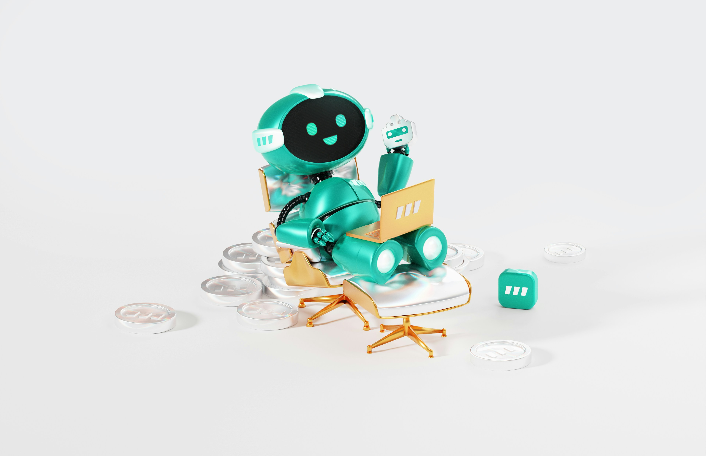
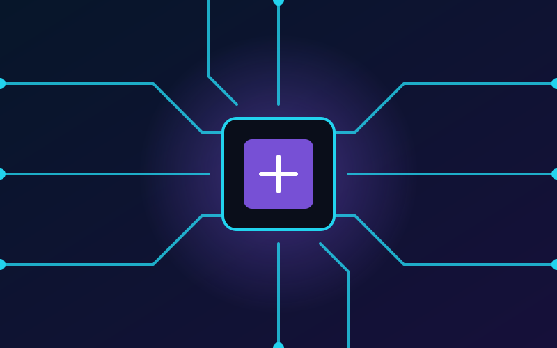

Första elektroniska datorerna
Maskiner som ENIAC fyllde hela rum och använde tusentals elektronrör för att räkna.
Teknik & framtid
Utforska resan från de första räknemaskinerna till dagens intelligenta robotar – och vart tekniken är på väg härnäst.
Starta resan
Datorer har gått från rumsstora maskiner till små chip som får plats i fickan.
Maskiner som ENIAC fyllde hela rum och använde tusentals elektronrör för att räkna.
Hela datorns hjärna samlades på ett enda litet chip, vilket gjorde persondatorn möjlig.
Webben kopplade ihop världen och förändrade hur vi lär, jobbar och umgås.
Kraftfulla datorer i molnet tränar AI-modeller som kan se, tala och fatta beslut.

En robot är en maskin som kan känna av sin omgivning, tänka med hjälp av en dator och agera med motorer och armar.
Bläddra bland illustrationer om teknikens värld.
Robotar som städar, lagar mat och hjälper äldre att klara vardagen.
Robotar tar farliga uppgifter i gruvor, fabriker och katastrofområden.
Ju smartare maskinerna blir, desto viktigare blir regler, integritet och rättvisa.